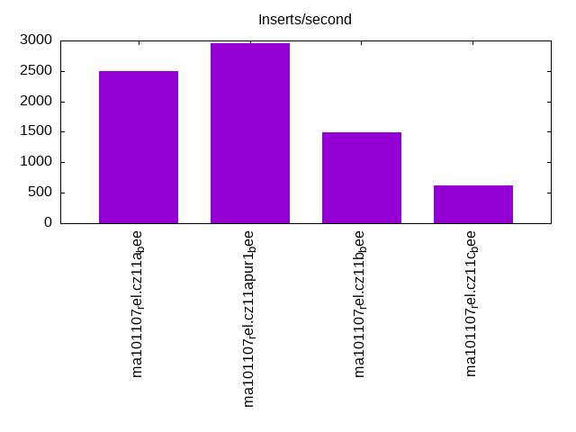

This is a report for the insert benchmark with 800M docs and 4 client(s). It is generated by scripts (bash, awk, sed) and Tufte might not be impressed. An overview of the insert benchmark is here and a short update is here. Below, by DBMS, I mean DBMS+version.config. An example is my8020.c10b40 where my means MySQL, 8020 is version 8.0.20 and c10b40 is the name for the configuration file.
The test server has 8 AMD cores, 16G RAM and an NVMe SSD. It is described here as the Beelink. The benchmark was run with 4 clients and there were 1 or 3 connections per client (1 for queries or inserts without rate limits, 1+1 for rate limited inserts+deletes). It uses 4 tables with a table per client. It loads 800M rows per table without secondary indexes, creates 3 secondary indexes per table, then inserts 2m rows per table with a delete per insert to avoid growing the table. It then does 6 read+write tests for 1800s each that do queries as fast as possible with 100,100,500,500,1000,1000 inserts/s and the same for deletes/s per client concurrent with the queries. The database is larger than memory. Clients and the DBMS share one server. The per-database configs are in the per-database subdirectories here.
The tested DBMS are:
The numbers are inserts/s for l.i0, l.i1 and l.i2, indexed docs (or rows) /s for l.x and queries/s for qr100, qp100 thru qr1000, qp1000" The values are the average rate over the entire test for inserts (IPS) and queries (QPS). The range of values for IPS and QPS is split into 3 parts: bottom 25%, middle 50%, top 25%. Values in the bottom 25% have a red background, values in the top 25% have a green background and values in the middle have no color. A gray background is used for values that can be ignored because the DBMS did not sustain the target insert rate. Red backgrounds are not used when the minimum value is within 80% of the max value.
| dbms | l.i0 | l.x | l.i1 | l.i2 | qr100 | qp100 | qr500 | qp500 | qr1000 | qp1000 |
|---|---|---|---|---|---|---|---|---|---|---|
| ma101107_rel.cz11a_bee | 256410 | 316206 | 2502 | 2689 | 14863 | 2193 | 5644 | 1106 | 2660 | 733 |
| ma101107_rel.cz11apur1_bee | 265252 | 321027 | 2957 | 657 | 12737 | 1953 | 5596 | 1120 | 2371 | 1613 |
| ma101107_rel.cz11b_bee | 251177 | 303030 | 1490 | 2086 | 14856 | 2088 | 5908 | 1144 | 3099 | 661 |
| ma101107_rel.cz11c_bee | 237600 | 315333 | 622 | 1053 | 15327 | 1311 | 1106 | 188 | 807 | 187 |
This table has relative throughput, throughput for the DBMS relative to the DBMS in the first line, using the absolute throughput from the previous table. Values less than 0.95 have a yellow background. Values greater than 1.05 have a blue background.
| dbms | l.i0 | l.x | l.i1 | l.i2 | qr100 | qp100 | qr500 | qp500 | qr1000 | qp1000 |
|---|---|---|---|---|---|---|---|---|---|---|
| ma101107_rel.cz11a_bee | 1.00 | 1.00 | 1.00 | 1.00 | 1.00 | 1.00 | 1.00 | 1.00 | 1.00 | 1.00 |
| ma101107_rel.cz11apur1_bee | 1.03 | 1.02 | 1.18 | 0.24 | 0.86 | 0.89 | 0.99 | 1.01 | 0.89 | 2.20 |
| ma101107_rel.cz11b_bee | 0.98 | 0.96 | 0.60 | 0.78 | 1.00 | 0.95 | 1.05 | 1.03 | 1.17 | 0.90 |
| ma101107_rel.cz11c_bee | 0.93 | 1.00 | 0.25 | 0.39 | 1.03 | 0.60 | 0.20 | 0.17 | 0.30 | 0.26 |
This lists the average rate of inserts/s for the tests that do inserts concurrent with queries. For such tests the query rate is listed in the table above. The read+write tests are setup so that the insert rate should match the target rate every second. Cells that are not at least 95% of the target have a red background to indicate a failure to satisfy the target.
| dbms | qr100.L1 | qp100.L2 | qr500.L3 | qp500.L4 | qr1000.L5 | qp1000.L6 |
|---|---|---|---|---|---|---|
| ma101107_rel.cz11a_bee | 399 | 399 | 1994 | 1994 | 2808 | 2940 |
| ma101107_rel.cz11apur1_bee | 396 | 399 | 1994 | 1994 | 3517 | 1141 |
| ma101107_rel.cz11b_bee | 399 | 399 | 1994 | 1994 | 2351 | 2494 |
| ma101107_rel.cz11c_bee | 399 | 399 | 800 | 731 | 722 | 767 |
| target | 400 | 400 | 2000 | 2000 | 4000 | 4000 |
l.i0: load without secondary indexes. Graphs for performance per 1-second interval are here.
Average throughput:
Insert response time histogram: each cell has the percentage of responses that take <= the time in the header and max is the max response time in seconds. For the max column values in the top 25% of the range have a red background and in the bottom 25% of the range have a green background. The red background is not used when the min value is within 80% of the max value.
| dbms | 256us | 1ms | 4ms | 16ms | 64ms | 256ms | 1s | 4s | 16s | gt | max |
|---|---|---|---|---|---|---|---|---|---|---|---|
| ma101107_rel.cz11a_bee | 0.106 | 97.277 | 2.565 | 0.032 | 0.020 | 0.179 | |||||
| ma101107_rel.cz11apur1_bee | 0.185 | 98.865 | 0.898 | 0.031 | 0.021 | 0.190 | |||||
| ma101107_rel.cz11b_bee | 0.161 | 97.208 | 2.555 | 0.056 | 0.020 | nonzero | 15.355 | ||||
| ma101107_rel.cz11c_bee | 0.129 | 97.357 | 2.404 | 0.073 | 0.037 | 0.001 | nonzero | nonzero | 31.783 |
Performance metrics for the DBMS listed above. Some are normalized by throughput, others are not. Legend for results is here.
ips qps rps rmbps wps wmbps rpq rkbpq wpi wkbpi csps cpups cspq cpupq dbgb1 dbgb2 rss maxop p50 p99 tag 256410 0 1757 6.9 1275.2 74.8 0.007 0.027 0.005 0.299 36433 78.8 0.142 25 52.6 68.5 10.3 0.179 64630 54241 ma101107_rel.cz11a_bee 265252 0 1756 6.9 1334.3 77.4 0.007 0.027 0.005 0.299 35639 79.7 0.134 24 52.6 68.5 10.3 0.190 66628 55540 ma101107_rel.cz11apur1_bee 251177 0 1719 6.7 1270.9 73.3 0.007 0.027 0.005 0.299 36015 77.2 0.143 25 52.6 68.5 10.3 15.355 64430 49946 ma101107_rel.cz11b_bee 237600 0 1623 6.3 256.3 69.3 0.007 0.027 0.001 0.299 33659 73.1 0.142 25 52.6 68.5 10.3 31.783 64429 0 ma101107_rel.cz11c_bee
l.x: create secondary indexes.
Average throughput:
Performance metrics for the DBMS listed above. Some are normalized by throughput, others are not. Legend for results is here.
ips qps rps rmbps wps wmbps rpq rkbpq wpi wkbpi csps cpups cspq cpupq dbgb1 dbgb2 rss maxop p50 p99 tag 316206 0 2056 281.3 2193.8 314.4 0.007 0.911 0.007 1.018 12215 41.0 0.039 10 119.9 135.8 10.4 0.003 NA NA ma101107_rel.cz11a_bee 321027 0 2043 285.3 2200.7 319.1 0.006 0.910 0.007 1.018 11985 41.5 0.037 10 119.9 135.8 10.4 0.005 NA NA ma101107_rel.cz11apur1_bee 303030 0 2038 271.0 2128.4 302.0 0.007 0.916 0.007 1.021 12659 40.3 0.042 11 119.9 135.8 10.4 0.003 NA NA ma101107_rel.cz11b_bee 315333 0 956 279.7 872.1 313.6 0.003 0.908 0.003 1.018 10263 42.0 0.033 11 119.9 135.8 10.4 0.009 NA NA ma101107_rel.cz11c_bee
l.i1: continue load after secondary indexes created with 50 inserts per transaction. Graphs for performance per 1-second interval are here.
Average throughput:
Insert response time histogram: each cell has the percentage of responses that take <= the time in the header and max is the max response time in seconds. For the max column values in the top 25% of the range have a red background and in the bottom 25% of the range have a green background. The red background is not used when the min value is within 80% of the max value.
| dbms | 256us | 1ms | 4ms | 16ms | 64ms | 256ms | 1s | 4s | 16s | gt | max |
|---|---|---|---|---|---|---|---|---|---|---|---|
| ma101107_rel.cz11a_bee | 44.888 | 55.041 | 0.070 | 0.002 | 1.386 | ||||||
| ma101107_rel.cz11apur1_bee | 1.041 | 49.951 | 48.987 | 0.019 | 0.002 | 1.416 | |||||
| ma101107_rel.cz11b_bee | 9.853 | 87.127 | 2.670 | 0.277 | 0.073 | 9.085 | |||||
| ma101107_rel.cz11c_bee | 2.515 | 47.437 | 48.904 | 1.025 | 0.080 | 0.040 | 47.518 |
Delete response time histogram: each cell has the percentage of responses that take <= the time in the header and max is the max response time in seconds. For the max column values in the top 25% of the range have a red background and in the bottom 25% of the range have a green background. The red background is not used when the min value is within 80% of the max value.
| dbms | 256us | 1ms | 4ms | 16ms | 64ms | 256ms | 1s | 4s | 16s | gt | max |
|---|---|---|---|---|---|---|---|---|---|---|---|
| ma101107_rel.cz11a_bee | 2.588 | 58.441 | 38.951 | 0.019 | 0.002 | 1.287 | |||||
| ma101107_rel.cz11apur1_bee | 15.955 | 49.457 | 34.583 | 0.003 | 0.002 | 1.267 | |||||
| ma101107_rel.cz11b_bee | 0.135 | 24.873 | 73.934 | 0.848 | 0.210 | 3.809 | |||||
| ma101107_rel.cz11c_bee | 0.253 | 6.862 | 86.063 | 6.408 | 0.347 | 0.064 | 0.003 | 17.534 |
Performance metrics for the DBMS listed above. Some are normalized by throughput, others are not. Legend for results is here.
ips qps rps rmbps wps wmbps rpq rkbpq wpi wkbpi csps cpups cspq cpupq dbgb1 dbgb2 rss maxop p50 p99 tag 2502 0 15562 241.3 14252.9 421.9 6.220 98.762 5.697 172.667 134681 24.7 53.832 790 144.5 160.3 10.1 1.386 649 400 ma101107_rel.cz11a_bee 2957 0 14941 231.7 15204.7 443.8 5.052 80.222 5.141 153.659 127338 21.4 43.057 579 163.7 180.0 10.2 1.416 750 447 ma101107_rel.cz11apur1_bee 1490 0 9220 143.0 8326.5 238.7 6.187 98.281 5.588 164.010 87527 15.8 58.739 848 144.5 160.3 10.1 9.085 350 0 ma101107_rel.cz11b_bee 622 0 3781 64.4 3239.5 99.8 6.076 105.938 5.206 164.231 68882 15.8 110.690 2031 144.5 160.3 10.1 47.518 150 0 ma101107_rel.cz11c_bee
l.i2: continue load after secondary indexes created with 5 inserts per transaction. Graphs for performance per 1-second interval are here.
Average throughput:
Insert response time histogram: each cell has the percentage of responses that take <= the time in the header and max is the max response time in seconds. For the max column values in the top 25% of the range have a red background and in the bottom 25% of the range have a green background. The red background is not used when the min value is within 80% of the max value.
| dbms | 256us | 1ms | 4ms | 16ms | 64ms | 256ms | 1s | 4s | 16s | gt | max |
|---|---|---|---|---|---|---|---|---|---|---|---|
| ma101107_rel.cz11a_bee | nonzero | 69.375 | 25.656 | 1.358 | 3.610 | 0.132 | |||||
| ma101107_rel.cz11apur1_bee | 0.001 | 37.368 | 12.769 | 40.996 | 8.866 | 0.171 | |||||
| ma101107_rel.cz11b_bee | 21.428 | 64.342 | 13.427 | 0.693 | 0.108 | 0.002 | 1.281 | ||||
| ma101107_rel.cz11c_bee | 10.473 | 34.902 | 53.682 | 0.767 | 0.143 | 0.033 | 3.401 |
Delete response time histogram: each cell has the percentage of responses that take <= the time in the header and max is the max response time in seconds. For the max column values in the top 25% of the range have a red background and in the bottom 25% of the range have a green background. The red background is not used when the min value is within 80% of the max value.
| dbms | 256us | 1ms | 4ms | 16ms | 64ms | 256ms | 1s | 4s | 16s | gt | max |
|---|---|---|---|---|---|---|---|---|---|---|---|
| ma101107_rel.cz11a_bee | 0.006 | 75.755 | 20.374 | 0.539 | 3.326 | 0.127 | |||||
| ma101107_rel.cz11apur1_bee | 0.002 | 37.787 | 12.389 | 41.062 | 8.759 | 0.166 | |||||
| ma101107_rel.cz11b_bee | 0.002 | 34.326 | 54.540 | 10.421 | 0.656 | 0.056 | 0.779 | ||||
| ma101107_rel.cz11c_bee | 28.248 | 31.184 | 39.884 | 0.574 | 0.106 | 0.004 | 3.384 |
Performance metrics for the DBMS listed above. Some are normalized by throughput, others are not. Legend for results is here.
ips qps rps rmbps wps wmbps rpq rkbpq wpi wkbpi csps cpups cspq cpupq dbgb1 dbgb2 rss maxop p50 p99 tag 2689 0 15918 238.9 13076.0 394.0 5.920 90.965 4.863 150.021 133310 31.1 49.576 925 144.5 160.3 10.1 0.132 679 594 ma101107_rel.cz11a_bee 657 0 7957 122.8 5233.8 158.7 12.115 191.455 7.969 247.399 57963 12.2 88.251 1486 164.3 180.8 10.2 0.171 90 65 ma101107_rel.cz11apur1_bee 2086 0 12258 183.9 9860.4 286.3 5.876 90.264 4.727 140.528 109286 25.0 52.390 959 144.5 160.3 10.1 1.281 544 10 ma101107_rel.cz11b_bee 1053 0 6044 92.5 4915.9 143.9 5.742 89.954 4.670 139.986 88801 23.3 84.363 1771 144.5 160.3 10.0 3.401 270 5 ma101107_rel.cz11c_bee
qr100.L1: range queries with 100 insert/s per client. Graphs for performance per 1-second interval are here.
Average throughput:
Query response time histogram: each cell has the percentage of responses that take <= the time in the header and max is the max response time in seconds. For max values in the top 25% of the range have a red background and in the bottom 25% of the range have a green background. The red background is not used when the min value is within 80% of the max value.
| dbms | 256us | 1ms | 4ms | 16ms | 64ms | 256ms | 1s | 4s | 16s | gt | max |
|---|---|---|---|---|---|---|---|---|---|---|---|
| ma101107_rel.cz11a_bee | 62.685 | 36.995 | 0.285 | 0.028 | 0.007 | 0.047 | |||||
| ma101107_rel.cz11apur1_bee | 64.006 | 33.860 | 1.956 | 0.109 | 0.069 | nonzero | 0.068 | ||||
| ma101107_rel.cz11b_bee | 62.511 | 37.177 | 0.273 | 0.033 | 0.006 | 0.054 | |||||
| ma101107_rel.cz11c_bee | 67.452 | 32.246 | 0.262 | 0.031 | 0.008 | nonzero | 0.090 |
Insert response time histogram: each cell has the percentage of responses that take <= the time in the header and max is the max response time in seconds. For max values in the top 25% of the range have a red background and in the bottom 25% of the range have a green background. The red background is not used when the min value is within 80% of the max value.
| dbms | 256us | 1ms | 4ms | 16ms | 64ms | 256ms | 1s | 4s | 16s | gt | max |
|---|---|---|---|---|---|---|---|---|---|---|---|
| ma101107_rel.cz11a_bee | 1.882 | 92.069 | 6.049 | 0.100 | |||||||
| ma101107_rel.cz11apur1_bee | 25.000 | 6.583 | 68.417 | 0.581 | |||||||
| ma101107_rel.cz11b_bee | 1.750 | 90.250 | 8.000 | 0.095 | |||||||
| ma101107_rel.cz11c_bee | 0.056 | 85.528 | 14.417 | 0.168 |
Delete response time histogram: each cell has the percentage of responses that take <= the time in the header and max is the max response time in seconds. For max values in the top 25% of the range have a red background and in the bottom 25% of the range have a green background. The red background is not used when the min value is within 80% of the max value.
| dbms | 256us | 1ms | 4ms | 16ms | 64ms | 256ms | 1s | 4s | 16s | gt | max |
|---|---|---|---|---|---|---|---|---|---|---|---|
| ma101107_rel.cz11a_bee | 37.271 | 61.243 | 1.486 | 0.089 | |||||||
| ma101107_rel.cz11apur1_bee | 0.771 | 27.660 | 3.153 | 68.417 | 0.564 | ||||||
| ma101107_rel.cz11b_bee | 34.931 | 63.056 | 2.014 | 0.084 | |||||||
| ma101107_rel.cz11c_bee | 22.965 | 72.312 | 4.722 | 0.121 |
Performance metrics for the DBMS listed above. Some are normalized by throughput, others are not. Legend for results is here.
ips qps rps rmbps wps wmbps rpq rkbpq wpi wkbpi csps cpups cspq cpupq dbgb1 dbgb2 rss maxop p50 p99 tag 399 14863 2538 39.4 1920.9 57.9 0.171 2.717 4.817 148.600 71856 51.3 4.835 276 144.5 160.3 10.1 0.047 3756 2094 ma101107_rel.cz11a_bee 396 12737 8404 131.1 5302.9 160.8 0.660 10.537 13.391 415.738 99799 50.4 7.836 317 164.3 180.8 10.2 0.068 3260 1678 ma101107_rel.cz11apur1_bee 399 14856 2539 39.5 2007.2 57.9 0.171 2.720 5.033 148.594 72166 51.2 4.858 276 144.5 160.3 10.1 0.054 3740 2030 ma101107_rel.cz11b_bee 399 15327 2458 40.3 1982.0 57.8 0.160 2.690 4.970 148.356 72756 52.3 4.747 273 144.5 160.3 10.0 0.090 3900 1854 ma101107_rel.cz11c_bee
qp100.L2: point queries with 100 insert/s per client. Graphs for performance per 1-second interval are here.
Average throughput:
Query response time histogram: each cell has the percentage of responses that take <= the time in the header and max is the max response time in seconds. For max values in the top 25% of the range have a red background and in the bottom 25% of the range have a green background. The red background is not used when the min value is within 80% of the max value.
| dbms | 256us | 1ms | 4ms | 16ms | 64ms | 256ms | 1s | 4s | 16s | gt | max |
|---|---|---|---|---|---|---|---|---|---|---|---|
| ma101107_rel.cz11a_bee | 0.519 | 96.872 | 2.328 | 0.280 | 0.050 | ||||||
| ma101107_rel.cz11apur1_bee | 0.351 | 95.361 | 3.035 | 1.253 | nonzero | 0.071 | |||||
| ma101107_rel.cz11b_bee | 0.488 | 96.300 | 2.661 | 0.550 | nonzero | 0.215 | |||||
| ma101107_rel.cz11c_bee | 0.041 | 87.484 | 10.818 | 1.647 | 0.009 | 0.002 | 0.672 |
Insert response time histogram: each cell has the percentage of responses that take <= the time in the header and max is the max response time in seconds. For max values in the top 25% of the range have a red background and in the bottom 25% of the range have a green background. The red background is not used when the min value is within 80% of the max value.
| dbms | 256us | 1ms | 4ms | 16ms | 64ms | 256ms | 1s | 4s | 16s | gt | max |
|---|---|---|---|---|---|---|---|---|---|---|---|
| ma101107_rel.cz11a_bee | 0.069 | 99.806 | 0.125 | 0.092 | |||||||
| ma101107_rel.cz11apur1_bee | 83.951 | 16.049 | 0.154 | ||||||||
| ma101107_rel.cz11b_bee | 0.118 | 99.771 | 0.111 | 0.096 | |||||||
| ma101107_rel.cz11c_bee | 68.431 | 31.424 | 0.146 | 0.700 |
Delete response time histogram: each cell has the percentage of responses that take <= the time in the header and max is the max response time in seconds. For max values in the top 25% of the range have a red background and in the bottom 25% of the range have a green background. The red background is not used when the min value is within 80% of the max value.
| dbms | 256us | 1ms | 4ms | 16ms | 64ms | 256ms | 1s | 4s | 16s | gt | max |
|---|---|---|---|---|---|---|---|---|---|---|---|
| ma101107_rel.cz11a_bee | 12.993 | 86.972 | 0.035 | 0.071 | |||||||
| ma101107_rel.cz11apur1_bee | 0.056 | 96.646 | 3.299 | 0.102 | |||||||
| ma101107_rel.cz11b_bee | 15.563 | 84.403 | 0.035 | 0.084 | |||||||
| ma101107_rel.cz11c_bee | 1.715 | 86.979 | 11.188 | 0.118 | 0.674 |
Performance metrics for the DBMS listed above. Some are normalized by throughput, others are not. Legend for results is here.
ips qps rps rmbps wps wmbps rpq rkbpq wpi wkbpi csps cpups cspq cpupq dbgb1 dbgb2 rss maxop p50 p99 tag 399 2193 21306 332.7 2221.8 66.6 9.715 155.342 5.571 170.971 65904 17.9 30.052 653 144.5 160.3 10.1 0.050 544 495 ma101107_rel.cz11a_bee 399 1953 21486 335.4 3644.3 109.3 11.002 175.876 9.138 280.716 76072 18.8 38.952 770 164.3 180.8 10.2 0.071 527 384 ma101107_rel.cz11apur1_bee 399 2088 20431 319.0 2329.7 66.8 9.788 156.491 5.842 171.625 63946 17.5 30.633 671 144.5 160.3 10.1 0.215 527 463 ma101107_rel.cz11b_bee 399 1311 13897 219.2 2252.8 64.9 10.602 171.226 5.649 166.629 58600 20.5 44.706 1251 144.5 160.3 9.4 0.672 336 224 ma101107_rel.cz11c_bee
qr500.L3: range queries with 500 insert/s per client. Graphs for performance per 1-second interval are here.
Average throughput:
Query response time histogram: each cell has the percentage of responses that take <= the time in the header and max is the max response time in seconds. For max values in the top 25% of the range have a red background and in the bottom 25% of the range have a green background. The red background is not used when the min value is within 80% of the max value.
| dbms | 256us | 1ms | 4ms | 16ms | 64ms | 256ms | 1s | 4s | 16s | gt | max |
|---|---|---|---|---|---|---|---|---|---|---|---|
| ma101107_rel.cz11a_bee | 37.070 | 51.781 | 9.595 | 1.160 | 0.393 | 0.001 | 0.087 | ||||
| ma101107_rel.cz11apur1_bee | 35.172 | 54.230 | 8.944 | 1.269 | 0.381 | 0.004 | 0.092 | ||||
| ma101107_rel.cz11b_bee | 38.269 | 49.841 | 10.125 | 1.532 | 0.223 | 0.008 | 0.001 | 0.514 | |||
| ma101107_rel.cz11c_bee | 12.989 | 63.694 | 11.920 | 3.421 | 7.323 | 0.645 | 0.005 | 0.002 | 1.470 |
Insert response time histogram: each cell has the percentage of responses that take <= the time in the header and max is the max response time in seconds. For max values in the top 25% of the range have a red background and in the bottom 25% of the range have a green background. The red background is not used when the min value is within 80% of the max value.
| dbms | 256us | 1ms | 4ms | 16ms | 64ms | 256ms | 1s | 4s | 16s | gt | max |
|---|---|---|---|---|---|---|---|---|---|---|---|
| ma101107_rel.cz11a_bee | 0.015 | 55.196 | 44.788 | 0.001 | 0.257 | ||||||
| ma101107_rel.cz11apur1_bee | 0.021 | 52.854 | 47.119 | 0.006 | 0.281 | ||||||
| ma101107_rel.cz11b_bee | 0.011 | 69.158 | 29.847 | 0.983 | 0.611 | ||||||
| ma101107_rel.cz11c_bee | 21.185 | 51.332 | 26.479 | 1.004 | 1.591 |
Delete response time histogram: each cell has the percentage of responses that take <= the time in the header and max is the max response time in seconds. For max values in the top 25% of the range have a red background and in the bottom 25% of the range have a green background. The red background is not used when the min value is within 80% of the max value.
| dbms | 256us | 1ms | 4ms | 16ms | 64ms | 256ms | 1s | 4s | 16s | gt | max |
|---|---|---|---|---|---|---|---|---|---|---|---|
| ma101107_rel.cz11a_bee | 3.321 | 63.836 | 32.843 | 0.226 | |||||||
| ma101107_rel.cz11apur1_bee | 1.522 | 60.307 | 38.169 | 0.001 | 0.258 | ||||||
| ma101107_rel.cz11b_bee | 0.850 | 81.642 | 16.910 | 0.599 | 0.580 | ||||||
| ma101107_rel.cz11c_bee | 0.014 | 29.539 | 47.056 | 23.212 | 0.179 | 1.527 |
Performance metrics for the DBMS listed above. Some are normalized by throughput, others are not. Legend for results is here.
ips qps rps rmbps wps wmbps rpq rkbpq wpi wkbpi csps cpups cspq cpupq dbgb1 dbgb2 rss maxop p50 p99 tag 1994 5644 15767 245.2 9449.5 284.2 2.793 44.488 4.738 145.928 114781 38.5 20.335 546 144.5 160.3 10.1 0.087 1422 1039 ma101107_rel.cz11a_bee 1994 5596 15322 238.3 10653.4 318.1 2.738 43.602 5.342 163.310 114781 38.2 20.510 546 164.3 180.8 10.2 0.092 1422 991 ma101107_rel.cz11apur1_bee 1994 5908 15233 236.9 9831.4 284.5 2.578 41.059 4.930 146.056 118435 38.4 20.046 520 144.5 160.3 10.1 0.514 1598 576 ma101107_rel.cz11b_bee 800 1106 6145 99.9 4405.5 126.8 5.556 92.523 5.505 162.253 79061 22.8 71.483 1649 146.3 162.2 9.4 1.470 224 80 ma101107_rel.cz11c_bee
qp500.L4: point queries with 500 insert/s per client. Graphs for performance per 1-second interval are here.
Average throughput:
Query response time histogram: each cell has the percentage of responses that take <= the time in the header and max is the max response time in seconds. For max values in the top 25% of the range have a red background and in the bottom 25% of the range have a green background. The red background is not used when the min value is within 80% of the max value.
| dbms | 256us | 1ms | 4ms | 16ms | 64ms | 256ms | 1s | 4s | 16s | gt | max |
|---|---|---|---|---|---|---|---|---|---|---|---|
| ma101107_rel.cz11a_bee | 0.010 | 86.282 | 10.918 | 2.788 | 0.002 | 0.090 | |||||
| ma101107_rel.cz11apur1_bee | 0.017 | 85.675 | 11.607 | 2.699 | 0.002 | 0.089 | |||||
| ma101107_rel.cz11b_bee | 0.004 | 78.869 | 20.047 | 1.060 | 0.016 | 0.004 | 0.507 | ||||
| ma101107_rel.cz11c_bee | 46.218 | 10.863 | 36.686 | 5.898 | 0.327 | 0.008 | 1.425 |
Insert response time histogram: each cell has the percentage of responses that take <= the time in the header and max is the max response time in seconds. For max values in the top 25% of the range have a red background and in the bottom 25% of the range have a green background. The red background is not used when the min value is within 80% of the max value.
| dbms | 256us | 1ms | 4ms | 16ms | 64ms | 256ms | 1s | 4s | 16s | gt | max |
|---|---|---|---|---|---|---|---|---|---|---|---|
| ma101107_rel.cz11a_bee | 0.004 | 49.246 | 50.750 | 0.223 | |||||||
| ma101107_rel.cz11apur1_bee | 0.112 | 53.447 | 46.440 | 0.223 | |||||||
| ma101107_rel.cz11b_bee | 76.075 | 23.721 | 0.204 | 0.601 | |||||||
| ma101107_rel.cz11c_bee | 21.868 | 36.425 | 39.358 | 2.349 | 2.165 |
Delete response time histogram: each cell has the percentage of responses that take <= the time in the header and max is the max response time in seconds. For max values in the top 25% of the range have a red background and in the bottom 25% of the range have a green background. The red background is not used when the min value is within 80% of the max value.
| dbms | 256us | 1ms | 4ms | 16ms | 64ms | 256ms | 1s | 4s | 16s | gt | max |
|---|---|---|---|---|---|---|---|---|---|---|---|
| ma101107_rel.cz11a_bee | 0.700 | 61.590 | 37.710 | 0.167 | |||||||
| ma101107_rel.cz11apur1_bee | 0.790 | 63.324 | 35.886 | 0.200 | |||||||
| ma101107_rel.cz11b_bee | 0.189 | 82.837 | 16.808 | 0.165 | 0.567 | ||||||
| ma101107_rel.cz11c_bee | 0.006 | 28.768 | 37.465 | 32.826 | 0.935 | 1.683 |
Performance metrics for the DBMS listed above. Some are normalized by throughput, others are not. Legend for results is here.
ips qps rps rmbps wps wmbps rpq rkbpq wpi wkbpi csps cpups cspq cpupq dbgb1 dbgb2 rss maxop p50 p99 tag 1994 1106 22059 343.6 9336.8 280.7 19.952 318.207 4.682 144.111 114273 25.5 103.359 1845 144.5 160.3 10.1 0.090 272 224 ma101107_rel.cz11a_bee 1994 1120 21727 338.5 10210.5 305.2 19.407 309.583 5.120 156.718 111089 23.3 99.231 1665 164.3 180.8 10.2 0.089 288 240 ma101107_rel.cz11apur1_bee 1994 1144 22383 348.7 9627.8 278.3 19.566 312.083 4.827 142.915 117493 23.5 102.704 1643 144.5 160.3 10.1 0.507 288 160 ma101107_rel.cz11b_bee 731 188 6048 95.3 4021.7 115.1 32.101 517.957 5.503 161.326 85624 20.5 454.482 8705 150.5 166.6 8.8 1.425 32 0 ma101107_rel.cz11c_bee
qr1000.L5: range queries with 1000 insert/s per client. Graphs for performance per 1-second interval are here.
Average throughput:
Query response time histogram: each cell has the percentage of responses that take <= the time in the header and max is the max response time in seconds. For max values in the top 25% of the range have a red background and in the bottom 25% of the range have a green background. The red background is not used when the min value is within 80% of the max value.
| dbms | 256us | 1ms | 4ms | 16ms | 64ms | 256ms | 1s | 4s | 16s | gt | max |
|---|---|---|---|---|---|---|---|---|---|---|---|
| ma101107_rel.cz11a_bee | 13.400 | 61.690 | 19.955 | 3.963 | 0.949 | 0.042 | 0.099 | ||||
| ma101107_rel.cz11apur1_bee | 13.104 | 62.121 | 18.521 | 5.138 | 0.809 | 0.307 | 0.139 | ||||
| ma101107_rel.cz11b_bee | 21.654 | 55.800 | 16.090 | 5.766 | 0.642 | 0.044 | 0.004 | nonzero | 2.747 | ||
| ma101107_rel.cz11c_bee | 8.166 | 66.409 | 13.634 | 1.835 | 8.565 | 1.384 | 0.004 | 0.004 | 1.548 |
Insert response time histogram: each cell has the percentage of responses that take <= the time in the header and max is the max response time in seconds. For max values in the top 25% of the range have a red background and in the bottom 25% of the range have a green background. The red background is not used when the min value is within 80% of the max value.
| dbms | 256us | 1ms | 4ms | 16ms | 64ms | 256ms | 1s | 4s | 16s | gt | max |
|---|---|---|---|---|---|---|---|---|---|---|---|
| ma101107_rel.cz11a_bee | 0.012 | 45.811 | 54.177 | 0.246 | |||||||
| ma101107_rel.cz11apur1_bee | 0.720 | 51.555 | 47.702 | 0.023 | 0.327 | ||||||
| ma101107_rel.cz11b_bee | 0.008 | 24.366 | 75.551 | 0.052 | 0.002 | 0.020 | 11.301 | ||||
| ma101107_rel.cz11c_bee | 29.706 | 34.601 | 32.726 | 2.967 | 2.568 |
Delete response time histogram: each cell has the percentage of responses that take <= the time in the header and max is the max response time in seconds. For max values in the top 25% of the range have a red background and in the bottom 25% of the range have a green background. The red background is not used when the min value is within 80% of the max value.
| dbms | 256us | 1ms | 4ms | 16ms | 64ms | 256ms | 1s | 4s | 16s | gt | max |
|---|---|---|---|---|---|---|---|---|---|---|---|
| ma101107_rel.cz11a_bee | 1.751 | 53.507 | 44.742 | 0.229 | |||||||
| ma101107_rel.cz11apur1_bee | 5.083 | 53.103 | 41.796 | 0.018 | 0.320 | ||||||
| ma101107_rel.cz11b_bee | 0.043 | 47.851 | 52.051 | 0.035 | 0.003 | 0.017 | 10.270 | ||||
| ma101107_rel.cz11c_bee | 0.012 | 37.727 | 29.457 | 32.245 | 0.559 | 1.952 |
Performance metrics for the DBMS listed above. Some are normalized by throughput, others are not. Legend for results is here.
ips qps rps rmbps wps wmbps rpq rkbpq wpi wkbpi csps cpups cspq cpupq dbgb1 dbgb2 rss maxop p50 p99 tag 2808 2660 19522 303.4 12444.7 374.3 7.340 116.813 4.432 136.503 134903 35.6 50.719 1071 144.5 160.3 10.1 0.099 671 575 ma101107_rel.cz11a_bee 3517 2371 19458 302.5 14927.1 445.8 8.207 130.674 4.244 129.777 132449 34.0 55.867 1147 164.3 181.3 10.2 0.139 592 448 ma101107_rel.cz11apur1_bee 2351 3099 16347 254.1 10534.5 305.1 5.274 83.966 4.482 132.912 122571 32.5 39.548 839 144.5 160.3 10.1 2.747 784 16 ma101107_rel.cz11b_bee 722 807 5275 84.8 3889.3 111.6 6.534 107.503 5.383 158.200 69111 19.7 85.597 1952 157.8 174.4 8.7 1.548 144 48 ma101107_rel.cz11c_bee
qp1000.L6: point queries with 1000 insert/s per client. Graphs for performance per 1-second interval are here.
Average throughput:
Query response time histogram: each cell has the percentage of responses that take <= the time in the header and max is the max response time in seconds. For max values in the top 25% of the range have a red background and in the bottom 25% of the range have a green background. The red background is not used when the min value is within 80% of the max value.
| dbms | 256us | 1ms | 4ms | 16ms | 64ms | 256ms | 1s | 4s | 16s | gt | max |
|---|---|---|---|---|---|---|---|---|---|---|---|
| ma101107_rel.cz11a_bee | 74.208 | 21.697 | 3.918 | 0.177 | 0.115 | ||||||
| ma101107_rel.cz11apur1_bee | 0.171 | 92.311 | 5.345 | 2.157 | 0.016 | 0.118 | |||||
| ma101107_rel.cz11b_bee | 46.964 | 49.054 | 3.623 | 0.332 | 0.026 | 0.001 | 1.404 | ||||
| ma101107_rel.cz11c_bee | 47.648 | 10.445 | 35.507 | 6.123 | 0.270 | 0.007 | 1.446 |
Insert response time histogram: each cell has the percentage of responses that take <= the time in the header and max is the max response time in seconds. For max values in the top 25% of the range have a red background and in the bottom 25% of the range have a green background. The red background is not used when the min value is within 80% of the max value.
| dbms | 256us | 1ms | 4ms | 16ms | 64ms | 256ms | 1s | 4s | 16s | gt | max |
|---|---|---|---|---|---|---|---|---|---|---|---|
| ma101107_rel.cz11a_bee | 0.007 | 44.455 | 55.538 | 0.202 | |||||||
| ma101107_rel.cz11apur1_bee | 0.402 | 30.708 | 28.765 | 40.125 | 0.552 | ||||||
| ma101107_rel.cz11b_bee | 0.001 | 27.780 | 72.122 | 0.062 | 0.008 | 0.027 | 8.673 | ||||
| ma101107_rel.cz11c_bee | 23.923 | 35.082 | 39.447 | 1.549 | 2.611 |
Delete response time histogram: each cell has the percentage of responses that take <= the time in the header and max is the max response time in seconds. For max values in the top 25% of the range have a red background and in the bottom 25% of the range have a green background. The red background is not used when the min value is within 80% of the max value.
| dbms | 256us | 1ms | 4ms | 16ms | 64ms | 256ms | 1s | 4s | 16s | gt | max |
|---|---|---|---|---|---|---|---|---|---|---|---|
| ma101107_rel.cz11a_bee | 0.808 | 50.262 | 48.931 | 0.201 | |||||||
| ma101107_rel.cz11apur1_bee | 1.145 | 32.069 | 26.684 | 40.102 | 0.540 | ||||||
| ma101107_rel.cz11b_bee | 0.021 | 50.680 | 49.229 | 0.035 | 0.019 | 0.017 | 7.066 | ||||
| ma101107_rel.cz11c_bee | 0.001 | 27.661 | 34.285 | 37.260 | 0.792 | 2.011 |
Performance metrics for the DBMS listed above. Some are normalized by throughput, others are not. Legend for results is here.
ips qps rps rmbps wps wmbps rpq rkbpq wpi wkbpi csps cpups cspq cpupq dbgb1 dbgb2 rss maxop p50 p99 tag 2940 733 23284 362.1 12753.1 383.5 31.752 505.702 4.338 133.591 141966 30.0 193.598 3273 144.5 160.3 10.1 0.115 176 160 ma101107_rel.cz11a_bee 1141 1613 24009 374.7 6814.1 204.3 14.881 237.802 5.970 183.307 103557 21.3 64.186 1056 165.1 182.3 10.3 0.118 463 160 ma101107_rel.cz11apur1_bee 2494 661 19911 309.8 10752.2 311.4 30.127 479.946 4.311 127.853 129287 24.5 195.622 2966 144.5 160.3 10.1 1.404 176 0 ma101107_rel.cz11b_bee 767 187 6174 98.7 3935.8 113.0 33.016 540.676 5.134 150.997 82713 19.8 442.315 8471 162.6 179.7 8.7 1.446 32 0 ma101107_rel.cz11c_bee
l.i0: load without secondary indexes
Performance metrics for all DBMS, not just the ones listed above. Some are normalized by throughput, others are not. Legend for results is here.
ips qps rps rmbps wps wmbps rpq rkbpq wpi wkbpi csps cpups cspq cpupq dbgb1 dbgb2 rss maxop p50 p99 tag 256410 0 1757 6.9 1275.2 74.8 0.007 0.027 0.005 0.299 36433 78.8 0.142 25 52.6 68.5 10.3 0.179 64630 54241 ma101107_rel.cz11a_bee 265252 0 1756 6.9 1334.3 77.4 0.007 0.027 0.005 0.299 35639 79.7 0.134 24 52.6 68.5 10.3 0.190 66628 55540 ma101107_rel.cz11apur1_bee 251177 0 1719 6.7 1270.9 73.3 0.007 0.027 0.005 0.299 36015 77.2 0.143 25 52.6 68.5 10.3 15.355 64430 49946 ma101107_rel.cz11b_bee 237600 0 1623 6.3 256.3 69.3 0.007 0.027 0.001 0.299 33659 73.1 0.142 25 52.6 68.5 10.3 31.783 64429 0 ma101107_rel.cz11c_bee
l.x: create secondary indexes
Performance metrics for all DBMS, not just the ones listed above. Some are normalized by throughput, others are not. Legend for results is here.
ips qps rps rmbps wps wmbps rpq rkbpq wpi wkbpi csps cpups cspq cpupq dbgb1 dbgb2 rss maxop p50 p99 tag 316206 0 2056 281.3 2193.8 314.4 0.007 0.911 0.007 1.018 12215 41.0 0.039 10 119.9 135.8 10.4 0.003 NA NA ma101107_rel.cz11a_bee 321027 0 2043 285.3 2200.7 319.1 0.006 0.910 0.007 1.018 11985 41.5 0.037 10 119.9 135.8 10.4 0.005 NA NA ma101107_rel.cz11apur1_bee 303030 0 2038 271.0 2128.4 302.0 0.007 0.916 0.007 1.021 12659 40.3 0.042 11 119.9 135.8 10.4 0.003 NA NA ma101107_rel.cz11b_bee 315333 0 956 279.7 872.1 313.6 0.003 0.908 0.003 1.018 10263 42.0 0.033 11 119.9 135.8 10.4 0.009 NA NA ma101107_rel.cz11c_bee
l.i1: continue load after secondary indexes created with 50 inserts per transaction
Performance metrics for all DBMS, not just the ones listed above. Some are normalized by throughput, others are not. Legend for results is here.
ips qps rps rmbps wps wmbps rpq rkbpq wpi wkbpi csps cpups cspq cpupq dbgb1 dbgb2 rss maxop p50 p99 tag 2502 0 15562 241.3 14252.9 421.9 6.220 98.762 5.697 172.667 134681 24.7 53.832 790 144.5 160.3 10.1 1.386 649 400 ma101107_rel.cz11a_bee 2957 0 14941 231.7 15204.7 443.8 5.052 80.222 5.141 153.659 127338 21.4 43.057 579 163.7 180.0 10.2 1.416 750 447 ma101107_rel.cz11apur1_bee 1490 0 9220 143.0 8326.5 238.7 6.187 98.281 5.588 164.010 87527 15.8 58.739 848 144.5 160.3 10.1 9.085 350 0 ma101107_rel.cz11b_bee 622 0 3781 64.4 3239.5 99.8 6.076 105.938 5.206 164.231 68882 15.8 110.690 2031 144.5 160.3 10.1 47.518 150 0 ma101107_rel.cz11c_bee
l.i2: continue load after secondary indexes created with 5 inserts per transaction
Performance metrics for all DBMS, not just the ones listed above. Some are normalized by throughput, others are not. Legend for results is here.
ips qps rps rmbps wps wmbps rpq rkbpq wpi wkbpi csps cpups cspq cpupq dbgb1 dbgb2 rss maxop p50 p99 tag 2689 0 15918 238.9 13076.0 394.0 5.920 90.965 4.863 150.021 133310 31.1 49.576 925 144.5 160.3 10.1 0.132 679 594 ma101107_rel.cz11a_bee 657 0 7957 122.8 5233.8 158.7 12.115 191.455 7.969 247.399 57963 12.2 88.251 1486 164.3 180.8 10.2 0.171 90 65 ma101107_rel.cz11apur1_bee 2086 0 12258 183.9 9860.4 286.3 5.876 90.264 4.727 140.528 109286 25.0 52.390 959 144.5 160.3 10.1 1.281 544 10 ma101107_rel.cz11b_bee 1053 0 6044 92.5 4915.9 143.9 5.742 89.954 4.670 139.986 88801 23.3 84.363 1771 144.5 160.3 10.0 3.401 270 5 ma101107_rel.cz11c_bee
qr100.L1: range queries with 100 insert/s per client
Performance metrics for all DBMS, not just the ones listed above. Some are normalized by throughput, others are not. Legend for results is here.
ips qps rps rmbps wps wmbps rpq rkbpq wpi wkbpi csps cpups cspq cpupq dbgb1 dbgb2 rss maxop p50 p99 tag 399 14863 2538 39.4 1920.9 57.9 0.171 2.717 4.817 148.600 71856 51.3 4.835 276 144.5 160.3 10.1 0.047 3756 2094 ma101107_rel.cz11a_bee 396 12737 8404 131.1 5302.9 160.8 0.660 10.537 13.391 415.738 99799 50.4 7.836 317 164.3 180.8 10.2 0.068 3260 1678 ma101107_rel.cz11apur1_bee 399 14856 2539 39.5 2007.2 57.9 0.171 2.720 5.033 148.594 72166 51.2 4.858 276 144.5 160.3 10.1 0.054 3740 2030 ma101107_rel.cz11b_bee 399 15327 2458 40.3 1982.0 57.8 0.160 2.690 4.970 148.356 72756 52.3 4.747 273 144.5 160.3 10.0 0.090 3900 1854 ma101107_rel.cz11c_bee
qp100.L2: point queries with 100 insert/s per client
Performance metrics for all DBMS, not just the ones listed above. Some are normalized by throughput, others are not. Legend for results is here.
ips qps rps rmbps wps wmbps rpq rkbpq wpi wkbpi csps cpups cspq cpupq dbgb1 dbgb2 rss maxop p50 p99 tag 399 2193 21306 332.7 2221.8 66.6 9.715 155.342 5.571 170.971 65904 17.9 30.052 653 144.5 160.3 10.1 0.050 544 495 ma101107_rel.cz11a_bee 399 1953 21486 335.4 3644.3 109.3 11.002 175.876 9.138 280.716 76072 18.8 38.952 770 164.3 180.8 10.2 0.071 527 384 ma101107_rel.cz11apur1_bee 399 2088 20431 319.0 2329.7 66.8 9.788 156.491 5.842 171.625 63946 17.5 30.633 671 144.5 160.3 10.1 0.215 527 463 ma101107_rel.cz11b_bee 399 1311 13897 219.2 2252.8 64.9 10.602 171.226 5.649 166.629 58600 20.5 44.706 1251 144.5 160.3 9.4 0.672 336 224 ma101107_rel.cz11c_bee
qr500.L3: range queries with 500 insert/s per client
Performance metrics for all DBMS, not just the ones listed above. Some are normalized by throughput, others are not. Legend for results is here.
ips qps rps rmbps wps wmbps rpq rkbpq wpi wkbpi csps cpups cspq cpupq dbgb1 dbgb2 rss maxop p50 p99 tag 1994 5644 15767 245.2 9449.5 284.2 2.793 44.488 4.738 145.928 114781 38.5 20.335 546 144.5 160.3 10.1 0.087 1422 1039 ma101107_rel.cz11a_bee 1994 5596 15322 238.3 10653.4 318.1 2.738 43.602 5.342 163.310 114781 38.2 20.510 546 164.3 180.8 10.2 0.092 1422 991 ma101107_rel.cz11apur1_bee 1994 5908 15233 236.9 9831.4 284.5 2.578 41.059 4.930 146.056 118435 38.4 20.046 520 144.5 160.3 10.1 0.514 1598 576 ma101107_rel.cz11b_bee 800 1106 6145 99.9 4405.5 126.8 5.556 92.523 5.505 162.253 79061 22.8 71.483 1649 146.3 162.2 9.4 1.470 224 80 ma101107_rel.cz11c_bee
qp500.L4: point queries with 500 insert/s per client
Performance metrics for all DBMS, not just the ones listed above. Some are normalized by throughput, others are not. Legend for results is here.
ips qps rps rmbps wps wmbps rpq rkbpq wpi wkbpi csps cpups cspq cpupq dbgb1 dbgb2 rss maxop p50 p99 tag 1994 1106 22059 343.6 9336.8 280.7 19.952 318.207 4.682 144.111 114273 25.5 103.359 1845 144.5 160.3 10.1 0.090 272 224 ma101107_rel.cz11a_bee 1994 1120 21727 338.5 10210.5 305.2 19.407 309.583 5.120 156.718 111089 23.3 99.231 1665 164.3 180.8 10.2 0.089 288 240 ma101107_rel.cz11apur1_bee 1994 1144 22383 348.7 9627.8 278.3 19.566 312.083 4.827 142.915 117493 23.5 102.704 1643 144.5 160.3 10.1 0.507 288 160 ma101107_rel.cz11b_bee 731 188 6048 95.3 4021.7 115.1 32.101 517.957 5.503 161.326 85624 20.5 454.482 8705 150.5 166.6 8.8 1.425 32 0 ma101107_rel.cz11c_bee
qr1000.L5: range queries with 1000 insert/s per client
Performance metrics for all DBMS, not just the ones listed above. Some are normalized by throughput, others are not. Legend for results is here.
ips qps rps rmbps wps wmbps rpq rkbpq wpi wkbpi csps cpups cspq cpupq dbgb1 dbgb2 rss maxop p50 p99 tag 2808 2660 19522 303.4 12444.7 374.3 7.340 116.813 4.432 136.503 134903 35.6 50.719 1071 144.5 160.3 10.1 0.099 671 575 ma101107_rel.cz11a_bee 3517 2371 19458 302.5 14927.1 445.8 8.207 130.674 4.244 129.777 132449 34.0 55.867 1147 164.3 181.3 10.2 0.139 592 448 ma101107_rel.cz11apur1_bee 2351 3099 16347 254.1 10534.5 305.1 5.274 83.966 4.482 132.912 122571 32.5 39.548 839 144.5 160.3 10.1 2.747 784 16 ma101107_rel.cz11b_bee 722 807 5275 84.8 3889.3 111.6 6.534 107.503 5.383 158.200 69111 19.7 85.597 1952 157.8 174.4 8.7 1.548 144 48 ma101107_rel.cz11c_bee
qp1000.L6: point queries with 1000 insert/s per client
Performance metrics for all DBMS, not just the ones listed above. Some are normalized by throughput, others are not. Legend for results is here.
ips qps rps rmbps wps wmbps rpq rkbpq wpi wkbpi csps cpups cspq cpupq dbgb1 dbgb2 rss maxop p50 p99 tag 2940 733 23284 362.1 12753.1 383.5 31.752 505.702 4.338 133.591 141966 30.0 193.598 3273 144.5 160.3 10.1 0.115 176 160 ma101107_rel.cz11a_bee 1141 1613 24009 374.7 6814.1 204.3 14.881 237.802 5.970 183.307 103557 21.3 64.186 1056 165.1 182.3 10.3 0.118 463 160 ma101107_rel.cz11apur1_bee 2494 661 19911 309.8 10752.2 311.4 30.127 479.946 4.311 127.853 129287 24.5 195.622 2966 144.5 160.3 10.1 1.404 176 0 ma101107_rel.cz11b_bee 767 187 6174 98.7 3935.8 113.0 33.016 540.676 5.134 150.997 82713 19.8 442.315 8471 162.6 179.7 8.7 1.446 32 0 ma101107_rel.cz11c_bee
Insert response time histogram
256us 1ms 4ms 16ms 64ms 256ms 1s 4s 16s gt max tag 0.000 0.106 97.277 2.565 0.032 0.020 0.000 0.000 0.000 0.000 0.179 ma101107_rel.cz11a_bee 0.000 0.185 98.865 0.898 0.031 0.021 0.000 0.000 0.000 0.000 0.190 ma101107_rel.cz11apur1_bee 0.000 0.161 97.208 2.555 0.056 0.020 0.000 0.000 nonzero 0.000 15.355 ma101107_rel.cz11b_bee 0.000 0.129 97.357 2.404 0.073 0.037 0.001 0.000 nonzero nonzero 31.783 ma101107_rel.cz11c_bee
TODO - determine whether there is data for create index response time
Insert response time histogram
256us 1ms 4ms 16ms 64ms 256ms 1s 4s 16s gt max tag 0.000 0.000 0.000 0.000 44.888 55.041 0.070 0.002 0.000 0.000 1.386 ma101107_rel.cz11a_bee 0.000 0.000 0.000 1.041 49.951 48.987 0.019 0.002 0.000 0.000 1.416 ma101107_rel.cz11apur1_bee 0.000 0.000 0.000 0.000 9.853 87.127 2.670 0.277 0.073 0.000 9.085 ma101107_rel.cz11b_bee 0.000 0.000 0.000 0.000 2.515 47.437 48.904 1.025 0.080 0.040 47.518 ma101107_rel.cz11c_bee
Delete response time histogram
256us 1ms 4ms 16ms 64ms 256ms 1s 4s 16s gt max tag 0.000 0.000 0.000 2.588 58.441 38.951 0.019 0.002 0.000 0.000 1.287 ma101107_rel.cz11a_bee 0.000 0.000 0.000 15.955 49.457 34.583 0.003 0.002 0.000 0.000 1.267 ma101107_rel.cz11apur1_bee 0.000 0.000 0.000 0.135 24.873 73.934 0.848 0.210 0.000 0.000 3.809 ma101107_rel.cz11b_bee 0.000 0.000 0.000 0.253 6.862 86.063 6.408 0.347 0.064 0.003 17.534 ma101107_rel.cz11c_bee
Insert response time histogram
256us 1ms 4ms 16ms 64ms 256ms 1s 4s 16s gt max tag 0.000 nonzero 69.375 25.656 1.358 3.610 0.000 0.000 0.000 0.000 0.132 ma101107_rel.cz11a_bee 0.000 0.001 37.368 12.769 40.996 8.866 0.000 0.000 0.000 0.000 0.171 ma101107_rel.cz11apur1_bee 0.000 0.000 21.428 64.342 13.427 0.693 0.108 0.002 0.000 0.000 1.281 ma101107_rel.cz11b_bee 0.000 0.000 10.473 34.902 53.682 0.767 0.143 0.033 0.000 0.000 3.401 ma101107_rel.cz11c_bee
Delete response time histogram
256us 1ms 4ms 16ms 64ms 256ms 1s 4s 16s gt max tag 0.000 0.006 75.755 20.374 0.539 3.326 0.000 0.000 0.000 0.000 0.127 ma101107_rel.cz11a_bee 0.000 0.002 37.787 12.389 41.062 8.759 0.000 0.000 0.000 0.000 0.166 ma101107_rel.cz11apur1_bee 0.000 0.002 34.326 54.540 10.421 0.656 0.056 0.000 0.000 0.000 0.779 ma101107_rel.cz11b_bee 0.000 0.000 28.248 31.184 39.884 0.574 0.106 0.004 0.000 0.000 3.384 ma101107_rel.cz11c_bee
Query response time histogram
256us 1ms 4ms 16ms 64ms 256ms 1s 4s 16s gt max tag 62.685 36.995 0.285 0.028 0.007 0.000 0.000 0.000 0.000 0.000 0.047 ma101107_rel.cz11a_bee 64.006 33.860 1.956 0.109 0.069 nonzero 0.000 0.000 0.000 0.000 0.068 ma101107_rel.cz11apur1_bee 62.511 37.177 0.273 0.033 0.006 0.000 0.000 0.000 0.000 0.000 0.054 ma101107_rel.cz11b_bee 67.452 32.246 0.262 0.031 0.008 nonzero 0.000 0.000 0.000 0.000 0.090 ma101107_rel.cz11c_bee
Insert response time histogram
256us 1ms 4ms 16ms 64ms 256ms 1s 4s 16s gt max tag 0.000 0.000 0.000 1.882 92.069 6.049 0.000 0.000 0.000 0.000 0.100 ma101107_rel.cz11a_bee 0.000 0.000 0.000 0.000 25.000 6.583 68.417 0.000 0.000 0.000 0.581 ma101107_rel.cz11apur1_bee 0.000 0.000 0.000 1.750 90.250 8.000 0.000 0.000 0.000 0.000 0.095 ma101107_rel.cz11b_bee 0.000 0.000 0.000 0.056 85.528 14.417 0.000 0.000 0.000 0.000 0.168 ma101107_rel.cz11c_bee
Delete response time histogram
256us 1ms 4ms 16ms 64ms 256ms 1s 4s 16s gt max tag 0.000 0.000 0.000 37.271 61.243 1.486 0.000 0.000 0.000 0.000 0.089 ma101107_rel.cz11a_bee 0.000 0.000 0.000 0.771 27.660 3.153 68.417 0.000 0.000 0.000 0.564 ma101107_rel.cz11apur1_bee 0.000 0.000 0.000 34.931 63.056 2.014 0.000 0.000 0.000 0.000 0.084 ma101107_rel.cz11b_bee 0.000 0.000 0.000 22.965 72.312 4.722 0.000 0.000 0.000 0.000 0.121 ma101107_rel.cz11c_bee
Query response time histogram
256us 1ms 4ms 16ms 64ms 256ms 1s 4s 16s gt max tag 0.000 0.519 96.872 2.328 0.280 0.000 0.000 0.000 0.000 0.000 0.050 ma101107_rel.cz11a_bee 0.000 0.351 95.361 3.035 1.253 nonzero 0.000 0.000 0.000 0.000 0.071 ma101107_rel.cz11apur1_bee 0.000 0.488 96.300 2.661 0.550 nonzero 0.000 0.000 0.000 0.000 0.215 ma101107_rel.cz11b_bee 0.000 0.041 87.484 10.818 1.647 0.009 0.002 0.000 0.000 0.000 0.672 ma101107_rel.cz11c_bee
Insert response time histogram
256us 1ms 4ms 16ms 64ms 256ms 1s 4s 16s gt max tag 0.000 0.000 0.000 0.069 99.806 0.125 0.000 0.000 0.000 0.000 0.092 ma101107_rel.cz11a_bee 0.000 0.000 0.000 0.000 83.951 16.049 0.000 0.000 0.000 0.000 0.154 ma101107_rel.cz11apur1_bee 0.000 0.000 0.000 0.118 99.771 0.111 0.000 0.000 0.000 0.000 0.096 ma101107_rel.cz11b_bee 0.000 0.000 0.000 0.000 68.431 31.424 0.146 0.000 0.000 0.000 0.700 ma101107_rel.cz11c_bee
Delete response time histogram
256us 1ms 4ms 16ms 64ms 256ms 1s 4s 16s gt max tag 0.000 0.000 0.000 12.993 86.972 0.035 0.000 0.000 0.000 0.000 0.071 ma101107_rel.cz11a_bee 0.000 0.000 0.000 0.056 96.646 3.299 0.000 0.000 0.000 0.000 0.102 ma101107_rel.cz11apur1_bee 0.000 0.000 0.000 15.563 84.403 0.035 0.000 0.000 0.000 0.000 0.084 ma101107_rel.cz11b_bee 0.000 0.000 0.000 1.715 86.979 11.188 0.118 0.000 0.000 0.000 0.674 ma101107_rel.cz11c_bee
Query response time histogram
256us 1ms 4ms 16ms 64ms 256ms 1s 4s 16s gt max tag 37.070 51.781 9.595 1.160 0.393 0.001 0.000 0.000 0.000 0.000 0.087 ma101107_rel.cz11a_bee 35.172 54.230 8.944 1.269 0.381 0.004 0.000 0.000 0.000 0.000 0.092 ma101107_rel.cz11apur1_bee 38.269 49.841 10.125 1.532 0.223 0.008 0.001 0.000 0.000 0.000 0.514 ma101107_rel.cz11b_bee 12.989 63.694 11.920 3.421 7.323 0.645 0.005 0.002 0.000 0.000 1.470 ma101107_rel.cz11c_bee
Insert response time histogram
256us 1ms 4ms 16ms 64ms 256ms 1s 4s 16s gt max tag 0.000 0.000 0.000 0.015 55.196 44.788 0.001 0.000 0.000 0.000 0.257 ma101107_rel.cz11a_bee 0.000 0.000 0.000 0.021 52.854 47.119 0.006 0.000 0.000 0.000 0.281 ma101107_rel.cz11apur1_bee 0.000 0.000 0.000 0.011 69.158 29.847 0.983 0.000 0.000 0.000 0.611 ma101107_rel.cz11b_bee 0.000 0.000 0.000 0.000 21.185 51.332 26.479 1.004 0.000 0.000 1.591 ma101107_rel.cz11c_bee
Delete response time histogram
256us 1ms 4ms 16ms 64ms 256ms 1s 4s 16s gt max tag 0.000 0.000 0.000 3.321 63.836 32.843 0.000 0.000 0.000 0.000 0.226 ma101107_rel.cz11a_bee 0.000 0.000 0.000 1.522 60.307 38.169 0.001 0.000 0.000 0.000 0.258 ma101107_rel.cz11apur1_bee 0.000 0.000 0.000 0.850 81.642 16.910 0.599 0.000 0.000 0.000 0.580 ma101107_rel.cz11b_bee 0.000 0.000 0.000 0.014 29.539 47.056 23.212 0.179 0.000 0.000 1.527 ma101107_rel.cz11c_bee
Query response time histogram
256us 1ms 4ms 16ms 64ms 256ms 1s 4s 16s gt max tag 0.000 0.010 86.282 10.918 2.788 0.002 0.000 0.000 0.000 0.000 0.090 ma101107_rel.cz11a_bee 0.000 0.017 85.675 11.607 2.699 0.002 0.000 0.000 0.000 0.000 0.089 ma101107_rel.cz11apur1_bee 0.000 0.004 78.869 20.047 1.060 0.016 0.004 0.000 0.000 0.000 0.507 ma101107_rel.cz11b_bee 0.000 0.000 46.218 10.863 36.686 5.898 0.327 0.008 0.000 0.000 1.425 ma101107_rel.cz11c_bee
Insert response time histogram
256us 1ms 4ms 16ms 64ms 256ms 1s 4s 16s gt max tag 0.000 0.000 0.000 0.004 49.246 50.750 0.000 0.000 0.000 0.000 0.223 ma101107_rel.cz11a_bee 0.000 0.000 0.000 0.112 53.447 46.440 0.000 0.000 0.000 0.000 0.223 ma101107_rel.cz11apur1_bee 0.000 0.000 0.000 0.000 76.075 23.721 0.204 0.000 0.000 0.000 0.601 ma101107_rel.cz11b_bee 0.000 0.000 0.000 0.000 21.868 36.425 39.358 2.349 0.000 0.000 2.165 ma101107_rel.cz11c_bee
Delete response time histogram
256us 1ms 4ms 16ms 64ms 256ms 1s 4s 16s gt max tag 0.000 0.000 0.000 0.700 61.590 37.710 0.000 0.000 0.000 0.000 0.167 ma101107_rel.cz11a_bee 0.000 0.000 0.000 0.790 63.324 35.886 0.000 0.000 0.000 0.000 0.200 ma101107_rel.cz11apur1_bee 0.000 0.000 0.000 0.189 82.837 16.808 0.165 0.000 0.000 0.000 0.567 ma101107_rel.cz11b_bee 0.000 0.000 0.000 0.006 28.768 37.465 32.826 0.935 0.000 0.000 1.683 ma101107_rel.cz11c_bee
Query response time histogram
256us 1ms 4ms 16ms 64ms 256ms 1s 4s 16s gt max tag 13.400 61.690 19.955 3.963 0.949 0.042 0.000 0.000 0.000 0.000 0.099 ma101107_rel.cz11a_bee 13.104 62.121 18.521 5.138 0.809 0.307 0.000 0.000 0.000 0.000 0.139 ma101107_rel.cz11apur1_bee 21.654 55.800 16.090 5.766 0.642 0.044 0.004 nonzero 0.000 0.000 2.747 ma101107_rel.cz11b_bee 8.166 66.409 13.634 1.835 8.565 1.384 0.004 0.004 0.000 0.000 1.548 ma101107_rel.cz11c_bee
Insert response time histogram
256us 1ms 4ms 16ms 64ms 256ms 1s 4s 16s gt max tag 0.000 0.000 0.000 0.012 45.811 54.177 0.000 0.000 0.000 0.000 0.246 ma101107_rel.cz11a_bee 0.000 0.000 0.000 0.720 51.555 47.702 0.023 0.000 0.000 0.000 0.327 ma101107_rel.cz11apur1_bee 0.000 0.000 0.000 0.008 24.366 75.551 0.052 0.002 0.020 0.000 11.301 ma101107_rel.cz11b_bee 0.000 0.000 0.000 0.000 29.706 34.601 32.726 2.967 0.000 0.000 2.568 ma101107_rel.cz11c_bee
Delete response time histogram
256us 1ms 4ms 16ms 64ms 256ms 1s 4s 16s gt max tag 0.000 0.000 0.000 1.751 53.507 44.742 0.000 0.000 0.000 0.000 0.229 ma101107_rel.cz11a_bee 0.000 0.000 0.000 5.083 53.103 41.796 0.018 0.000 0.000 0.000 0.320 ma101107_rel.cz11apur1_bee 0.000 0.000 0.000 0.043 47.851 52.051 0.035 0.003 0.017 0.000 10.270 ma101107_rel.cz11b_bee 0.000 0.000 0.000 0.012 37.727 29.457 32.245 0.559 0.000 0.000 1.952 ma101107_rel.cz11c_bee
Query response time histogram
256us 1ms 4ms 16ms 64ms 256ms 1s 4s 16s gt max tag 0.000 0.000 74.208 21.697 3.918 0.177 0.000 0.000 0.000 0.000 0.115 ma101107_rel.cz11a_bee 0.000 0.171 92.311 5.345 2.157 0.016 0.000 0.000 0.000 0.000 0.118 ma101107_rel.cz11apur1_bee 0.000 0.000 46.964 49.054 3.623 0.332 0.026 0.001 0.000 0.000 1.404 ma101107_rel.cz11b_bee 0.000 0.000 47.648 10.445 35.507 6.123 0.270 0.007 0.000 0.000 1.446 ma101107_rel.cz11c_bee
Insert response time histogram
256us 1ms 4ms 16ms 64ms 256ms 1s 4s 16s gt max tag 0.000 0.000 0.000 0.007 44.455 55.538 0.000 0.000 0.000 0.000 0.202 ma101107_rel.cz11a_bee 0.000 0.000 0.000 0.402 30.708 28.765 40.125 0.000 0.000 0.000 0.552 ma101107_rel.cz11apur1_bee 0.000 0.000 0.000 0.001 27.780 72.122 0.062 0.008 0.027 0.000 8.673 ma101107_rel.cz11b_bee 0.000 0.000 0.000 0.000 23.923 35.082 39.447 1.549 0.000 0.000 2.611 ma101107_rel.cz11c_bee
Delete response time histogram
256us 1ms 4ms 16ms 64ms 256ms 1s 4s 16s gt max tag 0.000 0.000 0.000 0.808 50.262 48.931 0.000 0.000 0.000 0.000 0.201 ma101107_rel.cz11a_bee 0.000 0.000 0.000 1.145 32.069 26.684 40.102 0.000 0.000 0.000 0.540 ma101107_rel.cz11apur1_bee 0.000 0.000 0.000 0.021 50.680 49.229 0.035 0.019 0.017 0.000 7.066 ma101107_rel.cz11b_bee 0.000 0.000 0.000 0.001 27.661 34.285 37.260 0.792 0.000 0.000 2.011 ma101107_rel.cz11c_bee